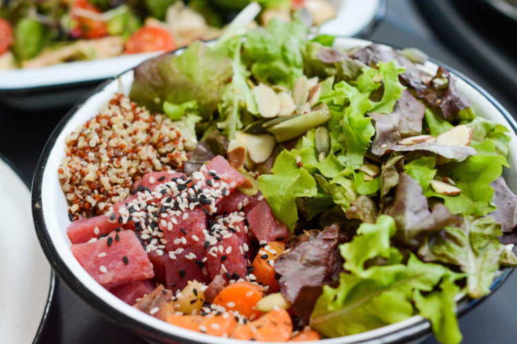

Ensalada poke de atún
10 min
Ver recetaCocina platos increíbles con ingredientes sencillos.
Bienvenido a tu nuevo rincón favorito en la cocina. Este es un espacio creado para los amantes de la buena comida, donde cada receta cuenta una historia y cada plato es una oportunidad para disfrutar, compartir y sorprender. Aquí encontrarás desde recetas sencillas para el día a día hasta propuestas más elaboradas para ocasiones especiales, siempre explicadas de forma clara y cercana. Creemos que cocinar no tiene por qué ser complicado, sino una experiencia creativa y placentera.
Por eso, nuestro objetivo es inspirarte, ayudarte a descubrir nuevos sabores y acompañarte en cada paso, tanto si estás empezando como si ya tienes experiencia entre fogones. Prepárate para explorar, experimentar y, sobre todo, disfrutar. Porque la mejor receta siempre es la que se hace con ganas.